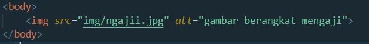
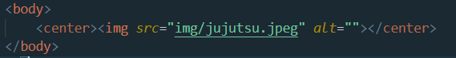
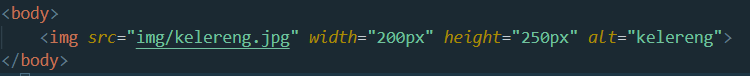

Untuk menampilkan gambar di html carannya yaitu dengan mengetik:
Ini adalah hasilnya:
Pada code tersebut terdapat atribut alt. Atribut alt berfungsi untuk memberi caption gambar apabila gambar gagal dimuat.
Contohnya kita salah mengetik di atribut source seperti:

Source seharusnya "ngaji.jpg", sehingga gambar akan gagal dimuat.
Kemudian hasilnya akan seperti ini:

Kita juga dapat menambahkan atribut "center" untuk meletakan gambar ke tengah.
Caranya yaitu:

Atribut width berfungsi untuk mengatur besarnya panjang dari gambar.
Sedangakan atribut height berfungsi untuk mengatur tinggi dari gambar.
Cara penggunaannya adalah :

Hasilnya adalah:
Semakin besar angka pixel maka semakin besar pula ukuran gambarnya, dan sebaliknya.
Dalam penulisan ukuran width dan height tidak diharuskan menulis "px" pada belakang angka.
Contoh beberapa perbandingan ukuran dan penulisannya adalah: